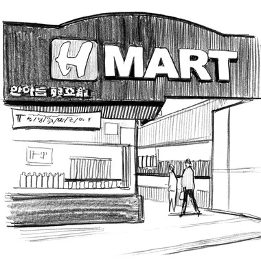

Crying in H Mart
by Michelle Zauner

Ever since my mom died, I cry in H Mart.
H Mart is a supermarket chain that specializes in Asian food. The H stands for han ah reum, a Korean phrase that roughly translates to “one arm full of groceries.”
H Mart is where parachute kids flock to find the brand of instant noodles that reminds them of home. It’s where Korean families buy rice cakes to make tteokguk, the beef and rice cake soup that brings in the New Year. It’s the only place where you can find a giant vat of peeled garlic, because it’s the only place that truly understands how much garlic you’ll need for the kind of food your people eat.
H Mart is freedom from the single-aisle “ethnic” section in regular grocery stores. They don’t prop Goya beans next to bottles of sriracha here. Instead, you’ll likely find me crying by the banchanrefrigerators, remembering the taste of my mom’s soy-sauce eggs and cold radish soup. Or in the freezer section, holding a stack of dumpling skins, thinking of all the hours that Mom and I spent at the kitchen table folding minced pork and chives into the thin dough. Sobbing near the dry goods, asking myself, Am I even Korean anymore if there’s no one left to call and ask which brand of seaweed we used to buy?”
Growing up in America with a Caucasian father and a Korean mother, I relied on my mom for access to our Korean heritage. While she never actually taught me how to cook (Korean people tend to disavow measurements and supply only cryptic instructions along the lines of “add sesame oil until it tastes like Mom’s”), she did raise me with a distinctly Korean appetite. This meant a reverence for good food and a predisposition to emotional eating.
We were particular about everything:
- kimchi had to be perfectly sour,
- samgyupsal perfectly crisped;
- stews had to be piping hot or they might as well have been inedible.
The concept of prepping meals for the week was a ludicrous affront to our lifestyle. We chased our cravings daily. If we wanted the kimchi stew for three weeks straight, we relished it until a new craving emerged. We ate in accordance with the seasons and holidays.
When spring arrived and the weather turned, we’d bring our camp stove outdoors and fry up strips of fresh pork belly on the deck. On my birthday, we ate miyeokguk—a hearty seaweed soup full of nutrients that women are encouraged to eat postpartum and that Koreans traditionally eat on their birthdays to celebrate their mothers.
Next